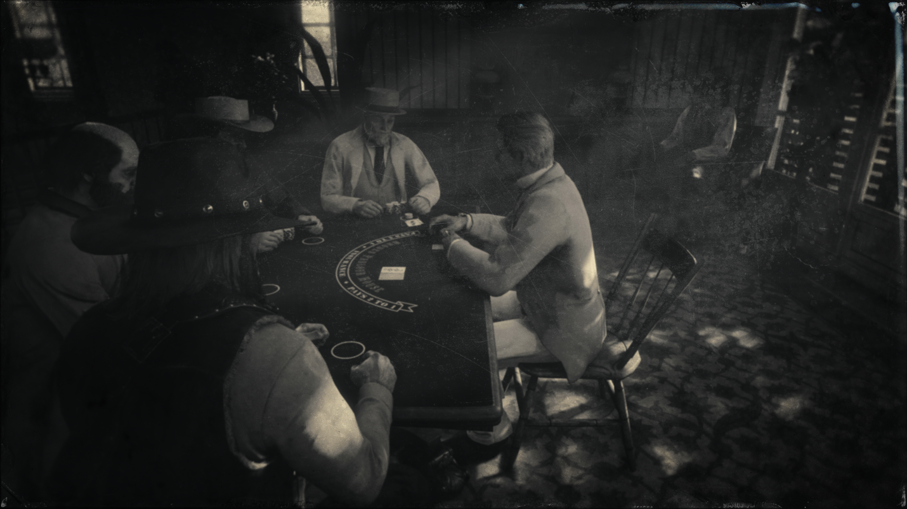
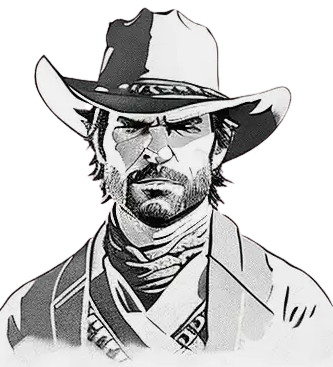
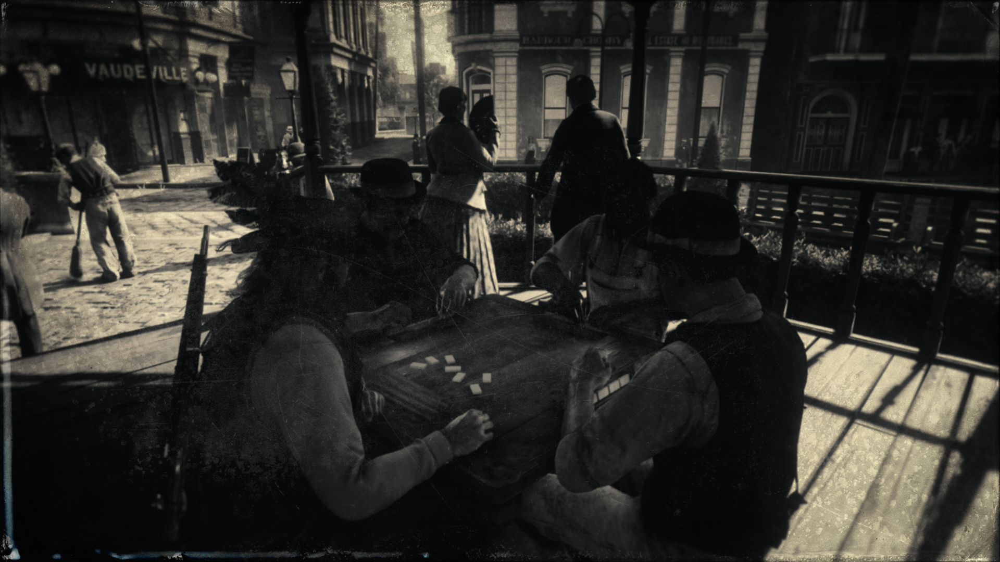

MINIJUEGOS RED DEAD REDEMPTION 2
$5 Saint Denis Octubre 28
El aire está cargado de tensión. Frente a ti, una mesa de madera marcada por años de uso. Alrededor, un grupo de personajes que parecen medir cada uno de tus movimientos: un vaquero con un sombrero raído, un comerciante que finge confianza y un forastero que apenas levanta la mirada de sus cartas. La luz de una lámpara de queso ilumina sus rostros, pero nadie dice mucho. El crupier reparte las cartas con precisión, sus movimientos rápidos y silenciosos. Revisas las tuyas sin mostrar emoción. ¿Un par? ¿Un farol? Aquí, nada está garantizado. |
BLACK JACKEl humo de los cigarros flota pesadamente en el aire, mezclado con el olor a madera envejecida y whisky derramado. La mesa está iluminada por una luz cálida, creando sombras alargadas en las caras de los jugadores. Frente a ti, el crupier reparte las cartas con la calma de un hombre que sabe que aquí la suerte no es más que otro jugador en la mesa. Tu mano inicial está frente a ti: un ocho y un seis. Membrillo. La pregunta quema en tu mente: ¿Pides otra carta o te plantas? El crupier, como una estatua viviente, espera tu decisión, mientras sus manos descansan sobre el mazo, listo para cambiarlo todo. El vaquero al lado de ti, con la mirada fija en sus propias cartas, no tiene prisa. Ya está acostumbrado a este juego de nervios. Y el hombre del sombrero ancho, en el extremo de la mesa, te observa con una sonrisa a medias, como si ya supiera que tienes una mala mano.

|
DOMINOSiéntate, ajustas tu sombrero, y miras las fichas que tienes en la mano. Las sientes frías al tocarlas, el peso de cada pieza un recordatorio del duelo que estás por bibliotecar. El hombre frente a ti, un vaquero de rostro curtido por el sol, lanza su ficha con destreza, sin prisa, como si estuviera esperando algo. El que está a tu izquierda no dice una palabra, solo observa. La tensión está en el aire, y sabes que cada movimiento podría significar mucho. |
|
El aire es pesado, cargado de polvo y sudor. El sonido del viento es lo único que se oye, aparte de las conversaciones de los otros jugadores en la oscuridad del rincón del salón. La mesa está rodeada de hombres curtidos por años de vida dura en el Oeste, y el único que habla es el que tiene el cuchillo en la mano. Los ojos de los demás brillan, pero no dicen una palabra. Nadie se atreve a ponerse en la mesa. El juego de cuchillos está a punto de comenzar. Cada jugador tiene un cuchillo, un simple cuchillo de acero, desgastado por el uso y el tiempo. Lo sostienes en tu mano, sintiendo el frío metal en tus dedos, como un recordatorio de lo que está en juego. |